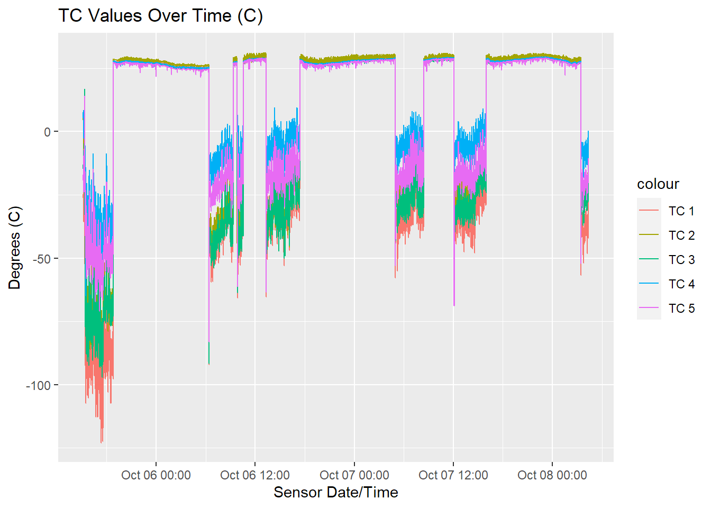
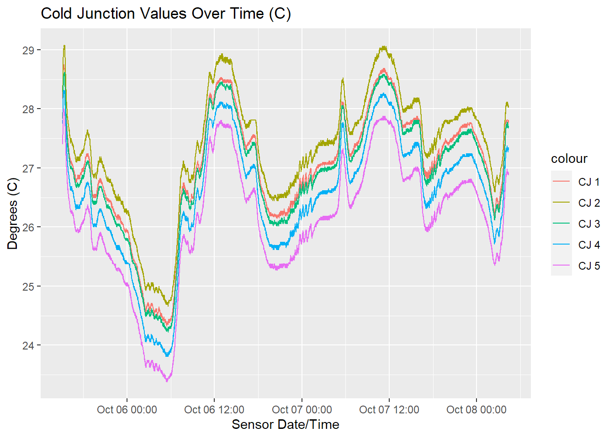
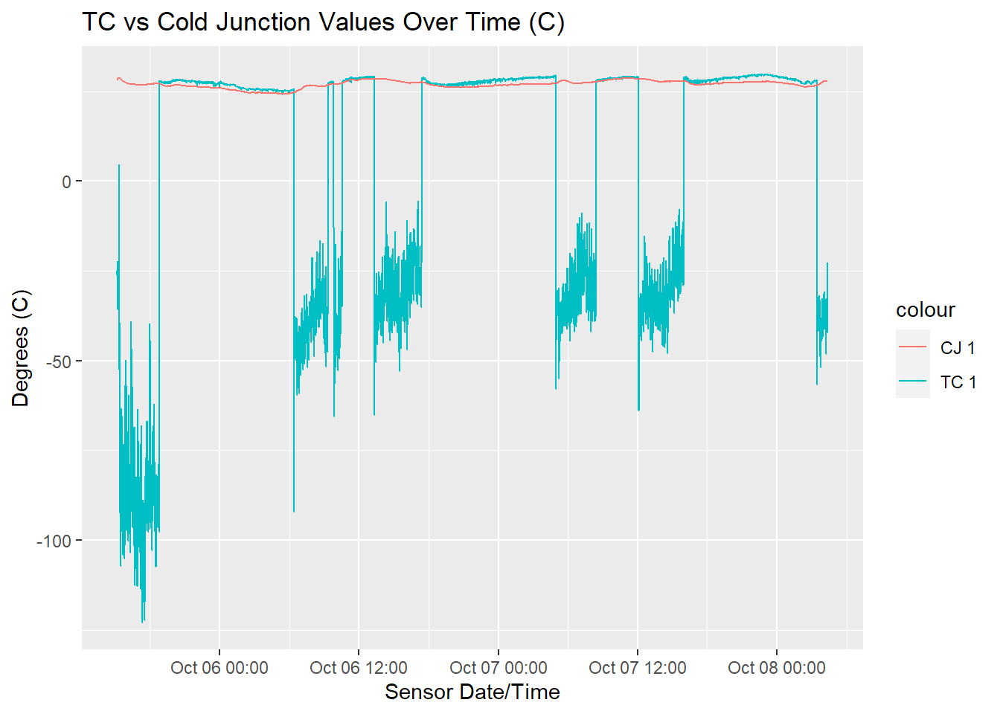

CEAC Temperature Relay Control Module (TRC) Thermocouple Analysis
Data Logger File
Data was recorded with the following fields.
Logger_Date, Record_Number, Sensor_Date, Sensor_ID, TC1, TC2, TC3, TC4, TC5, CJ1, CJ2, CJ3, CJ4, CJ5
TC1 - Thermocouple #1 outside the TRC box, taped on top of it. TRC was laying on the ground under a grow bench that was shaded and had air flow from a cooling pad going over it.
CJ1 - Cold Junction on interface chip within the RTC box. Since the cold junction of the circuit boards were within the TRC box their temperature fluctuated with the inside temperature although it is not a value of the temperature of the in box conditions.
Sample Record:
2023-10-05 13:55:52,36283,2023-10-05 06:38:48,c4:5b:be:e4:fd:71,32.0,33.25,32.25,32.0,30.83,28.21,28.48,28.09,27.75,27.25
Thermocouple Values
All 5 TC are graphed together over time. The readings of the TCs align well with each other when they are above 0, a non-error state. There are fairly consistent sets of readings that drop into invalid values, typically showing up in the data as negative numbers. It is unknown why this is happening in Greenhouse C at the CEAC. One hypothesis is that the HPS lamps may be causing electrical interference. A set of data that contains information on when the lamps are on or off will help confirm this.
It is interesting to note that the same TRC box configuration at Biosphere 2 does not exhibit this pattern, nor negative TC values.
More data samples need to be evaluated.

Cold Junction Temperatures
Each thermocouple is attached to it’s own circuit board that allows the micro controller to take a reading. These contain a cold junction reference value. Since all of these chips exist within the sealed TRC box, they give a general indication of temperature trends within that box.

Comparison of TC1 Temperature and Cold Junction
One thermocouple and it’s cold junction are graphed together. Looking at the cold junction line there are variations that can be compared to the TC reading. Cold junction values follow the TC values, which is expected as the TC is on top of the box that contains the cold junction circuit boards. The invalid values from the TC, visually, do not appear to follow any cold junction changes.

Continued Work
Additional data will be collected at the CEAC while the aspirated temperature sensors are being calibrated. The new data can be analyzed to see if this trend continues.
Biosphere 2 data files will be run through the same analysis to see how they perform in the tropical rain forest.